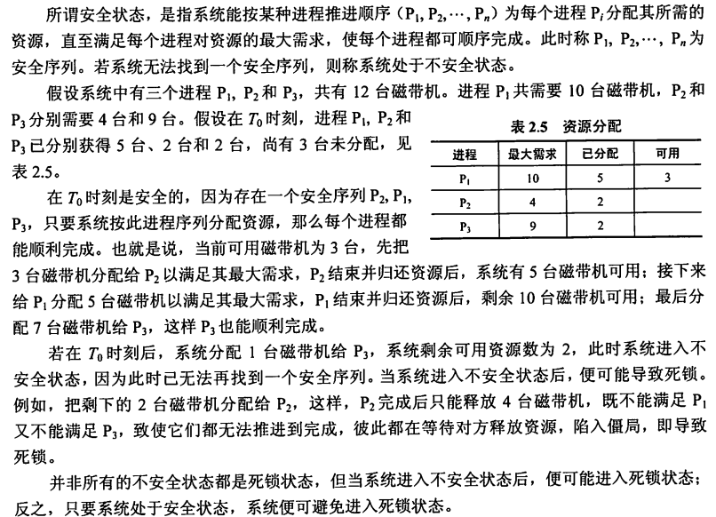
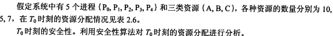
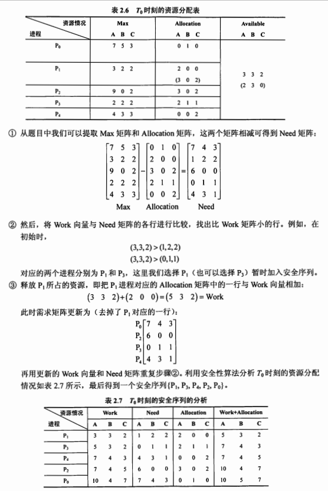
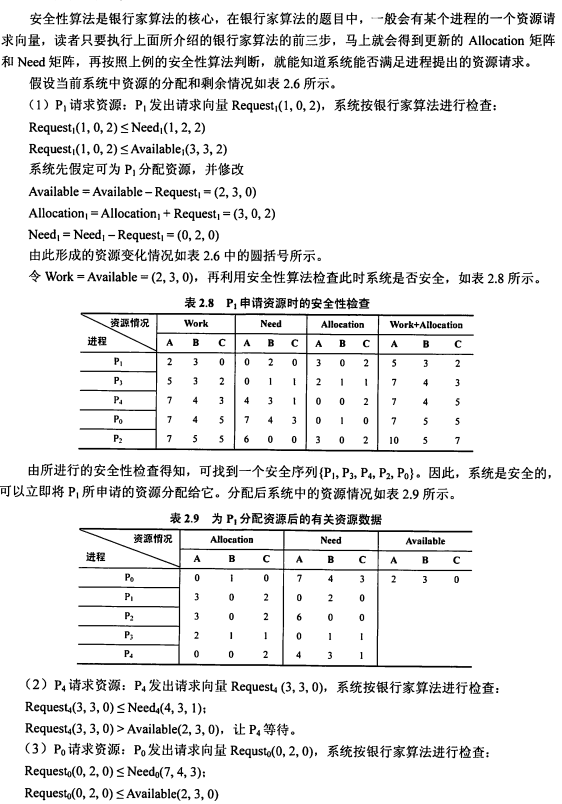
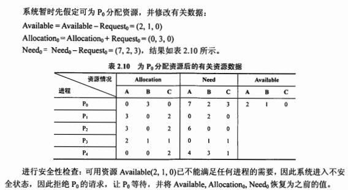
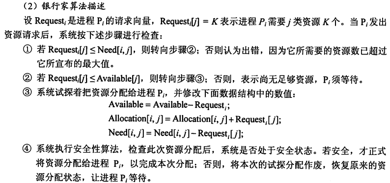

快速到达
死锁
概念： 多个并发进程因争夺系统资源而产生相互等待的现象。
1. 四个必要条件
- 互斥：某种资源一次只允许一个进程访问，即该资源一旦分配给某个进程，其他进程就不能再访问，直到该进程访问结束。
- 占有且等待：一个进程本身占有资源（一种或多种），同时还有资源未得到满足，正在等待其他进程释放该资源。
- 不可抢占：别人已经占有了某项资源，你不能因为自己也需要该资源，就去把别人的资源抢过来。
- 循环等待：存在一个进程链，使得每个进程都占有下一个进程所需的至少一种资源。
当以上四个条件均满足，必然会造成死锁，发生死锁的进程无法进行下去，它们所持有的资源也无法释放。这样会导致CPU的吞吐量下降。所以死锁情况是会浪费系统资源和影响计算机的使用性能的。那么，解决死锁问题就是相当有必要的了。
2. 死锁预防
我们可以通过破坏死锁产生的4个必要条件来 预防死锁，由于资源互斥是资源使用的固有特性是无法改变的。
破坏“占有且等待”条件
方法1：所有的进程在开始运行之前，必须一次性地申请其在整个运行过程中所需要的全部资源。
优点：简单易实施且安全。
缺点：因为某项资源不满足，进程无法启动，而其他已经满足了的资源也不会得到利用，严重降低了资源的利用率，造成资源浪费。
使进程经常发生饥饿现象。
方法2：该方法是对第一种方法的改进，允许进程只获得运行初期需要的资源，便开始运行，在运行过程中逐步释放掉分配到的已经使用完毕的资源，然后再去请求新的资源。这样的话，资源的利用率会得到提高，也会减少进程的饥饿问题。
破坏“不可抢占”条件
当一个已经持有了一些资源的进程在提出新的资源请求没有得到满足时，它必须释放已经保持的所有资源，待以后需要使用的时候再重新申请。这就意味着进程已占有的资源会被短暂地释放或者说是被抢占了。
该种方法实现起来比较复杂，且代价也比较大。释放已经保持的资源很有可能会导致进程之前的工作实效等，反复的申请和释放资源会导致进程的执行被无限的推迟，这不仅会延长进程的周转周期，还会影响系统的吞吐量。
破坏“循环等待”条件
采用资源有序分配其基本思想是将系统中的所有资源顺序编号，将紧缺的，稀少的采用较大的编号，在申请资源时必须按照编号的顺序进行（从小往大申请），一个进程只有获得较小编号的进程才能申请较大编号的进程。
3. 死锁的避免
死锁避免：在使用前进行判断，只允许不会产生死锁的进程申请资源；
死锁避免是利用额外的检验信息，在分配资源时判断是否会出现死锁，只在不会出现死锁的情况下才分配资源。两种避免办法：
1、如果一个进程的请求会导致死锁，则不启动该进程
2、如果一个进程的增加资源请求会导致死锁 ，则拒绝该申请。
银行家算法

  算法描述
 
相关数据结构
可利用资源向量Available：用于表示系统里边各种资源剩余的数目。由于系统里边拥有的资源通常都是有很多种（假设有m种），所以，我们用一个有m个元素的数组来表示各种资源。数组元素的初始值为系统里边所配置的该类全部可用资源的数目，其数值随着该类资源的分配与回收动态地改变。
最大需求矩阵Max：用于表示各个进程对各种资源的额最大需求量。进程可能会有很多个（假设为n个），那么，我们就可以用一个nxm的矩阵来表示各个进程多各种资源的最大需求量
分配矩阵Allocation：顾名思义，就是用于表示已经分配给各个进程的各种资源的数目。也是一个nxm的矩阵。
需求矩阵Need：用于表示进程仍然需要的资源数目，用一个nxm的矩阵表示。
上述三个矩阵之间存在下述关系
核心：安全性算法
安全状态
安全性算法举例
算法描述
举例
死锁避免的优点：
不需要死锁预防中的抢占和重新运行进程，并且比死锁预防的限制要少。
死锁避免的限制：
必须事先声明每个进程请求的最大资源量
考虑的进程必须无关的，也就是说，它们执行的顺序必须没有任何同步要求的限制
分配的资源数目必须是固定的。
在占有资源时，进程不能退出
4. 死锁检测和解除
4.1 资源分配图
4.2 死锁定理
4.3 死锁解除
参考
王道P138